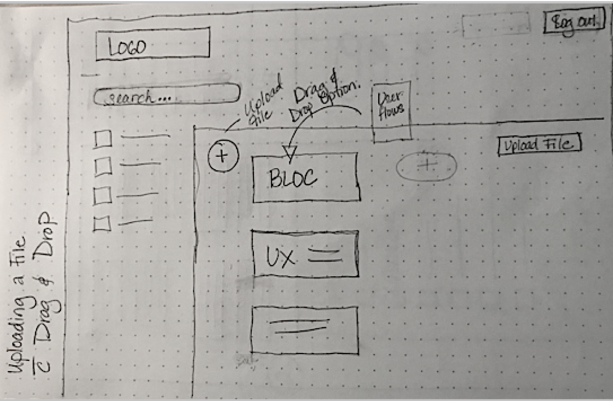
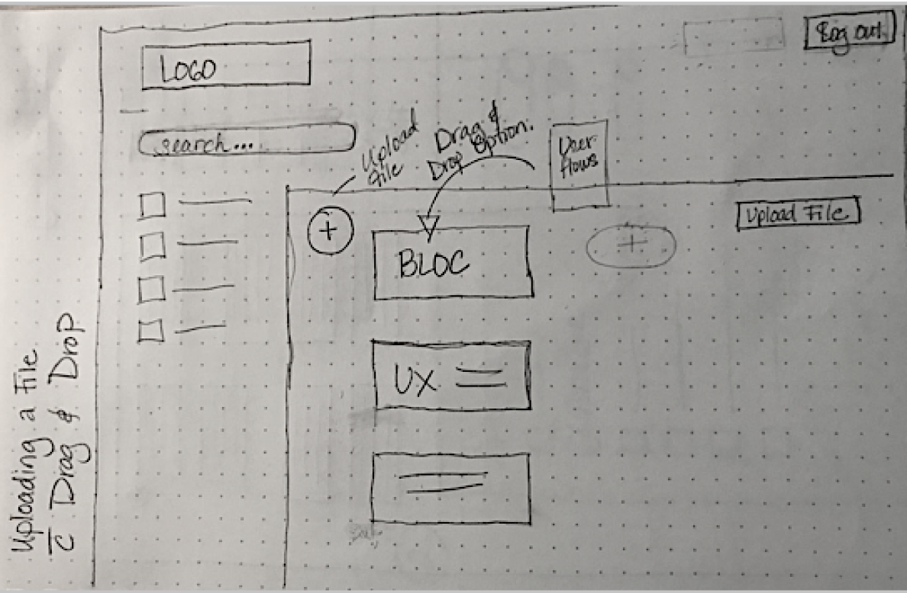

What is CORE?
Core is a cloud based storage service with value placed on usability. Core’s efficiency allows the user to organize and manage content while collaborating with others. Core offers storage, content creation, real-time collaboration and visual organization.

My Role
Core is a cloud based storage service with value placed on usability. Core’s efficiency allows the user to organize and manage content while collaborating with others. Core offers storage, content creation, real-time collaboration and visual organization.
The Challenge
There are several cloud based services currently accessible for personal and business use. Products such as iCloud, Dropbox, Google Drive and Pinterest seek to find the balance between the user’s needs and wants. With this in mind, the challenge was to create a solution that eliminated frustrations and enabled better satisfaction over the current available options.
Competative Analysis
To understand the current cloud storage market, this analysis gave me a better understanding of the potential gaps as well as untapped opportunities within the market and any room for improvement. From a design perspective the biggest takeaway was intuitiveness and an ability to collaborate.


User Research
I began wtih a survey that was sent out to social media contacts, friends, and peers to understand the users. Surveying almost twenty people, I found that 94% used cloud storage on a regular basis and over half use cloud storage on a daily basis. And of the 16 people surveyed, 66% provided feedback/recommendations on how to improve cloud storage.

Research showed that the frustration with cloud storage has to do with intuitiveness of the product. The user wants the ability to interface with the product easily with the option of guided help or live support through phone or chat. Finally, the research showed that the cost of the service must be competitive in price with options for both the professional, personal or student.
User Personas
Understanding the user is the most important part of the process, after asking in-depth questions the following two personas emerged.


User Flows & User Stories
The user stories to highlight the main features of the product. The user stories were then converted into User flows to illustrate how the user would interact with the product and accomplish the goals.
User Stories


User Flows


User Research
I began wtih a survey that was sent out to social media contacts, friends, and peers to understand the users. Surveying almost twenty people, I found that 94% used cloud storage on a regular basis and over half use cloud storage on a daily basis. And of the 16 people surveyed, 66% provided feedback/recommendations on how to improve cloud storage.
Research showed that the frustration with cloud storage has to do with intuitiveness of the product. The user wants the ability to interface with the product easily with the option of guided help or live support through phone or chat. Finally, the research showed that the cost of the service must be competitive in price with options for both the professional, personal or student.
Brand & Identity
This is where ideas and concepts are more than a thought or idea. Based on research, the brand needed to conceptualize the place were valued items are stored and shared, almost like a computer hard-drive. Based on research the brand needed to be trustworthy and simplistic.
The final logo was user tested to ensure both readability and brand identity.
Typography
Type is branding. Helvetica has a strong history within the design community and it was chosen to suppor the brand and identity of Core because of its openness, neutrality and symmetry.
Color
There is a high contrast between dark gray, light gray and white. This allows for better readability. The primary color is color is blue to emphasize trust and loyalty. While the purple color was chosen because it positively affects the user’s attention and flow.
Pen & Paper
Utilizing the research and design notes I quickly sketched some ideas onto paper that would be used to create a simple wireframe in Sketch.

 


After completing the sketches with paper and pen, I walked some friends through the process after briefly describing the app. What I learned showed me that most users want to simply use cloud storage from either their mobile device or their home computer. Quickly accessing their stored documents from anywhere. I moved forward with the results and proceeded to create a more refined hi-fidelity wireframe in Sketch.
Wireframes
Translating my user testing notes and design sketches, I designed the following wireframes that would later be used to create a prototype in Sketch and then user-tested with Invision. The flow and design went through multiple designs and iterations.
High-Fidelity Prototype
The high-fidelity mockups were designed in Sketch. Using Apple’s Human Interface Guidelines, I applied the color pallete, sketches and typography guidelines previously determined.
User Testing
Translating my user testing notes and design sketches, I designed the following wireframes that would later be used to create a prototype in Sketch and then user-tested with Invision. The flow and design went through multiple designs and iterations.
Finished Product
Translating my user testing notes and design sketches, I designed the following wireframes that would later be used to create a prototype in Sketch and then user-tested with Invision. The flow and design went through multiple designs and iterations.


What I Learned
Translating my user testing notes and design sketches, I designed the following w